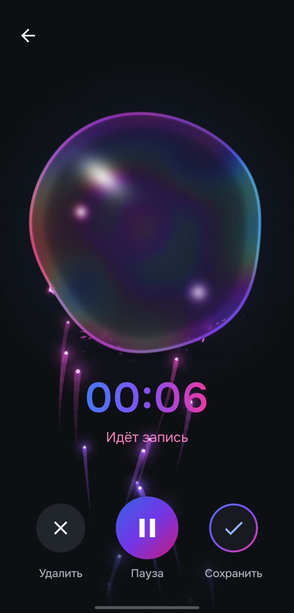
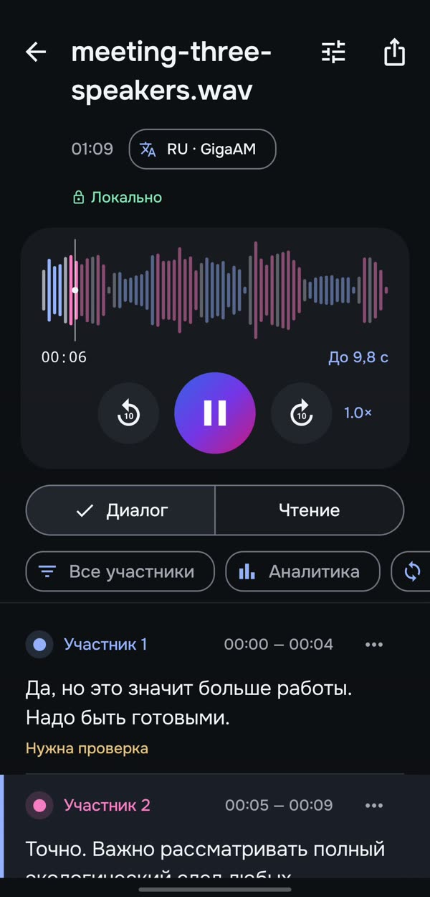
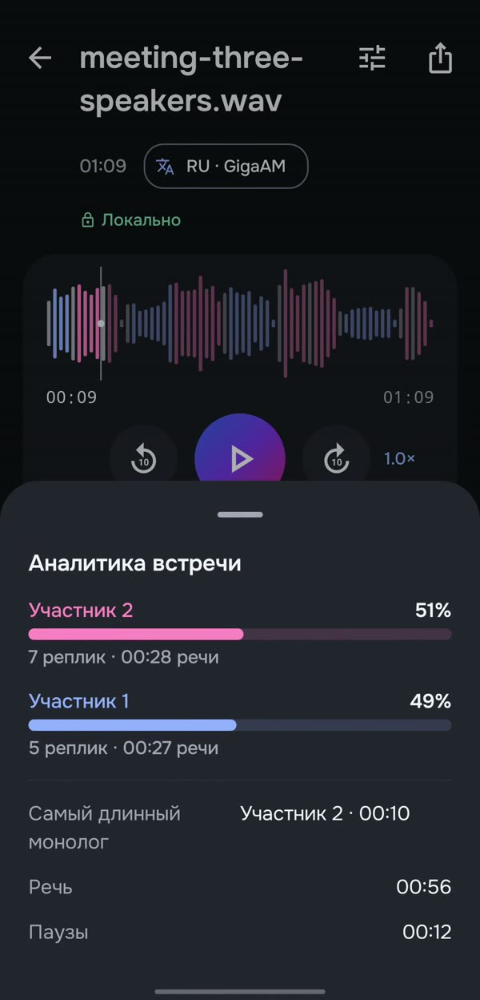
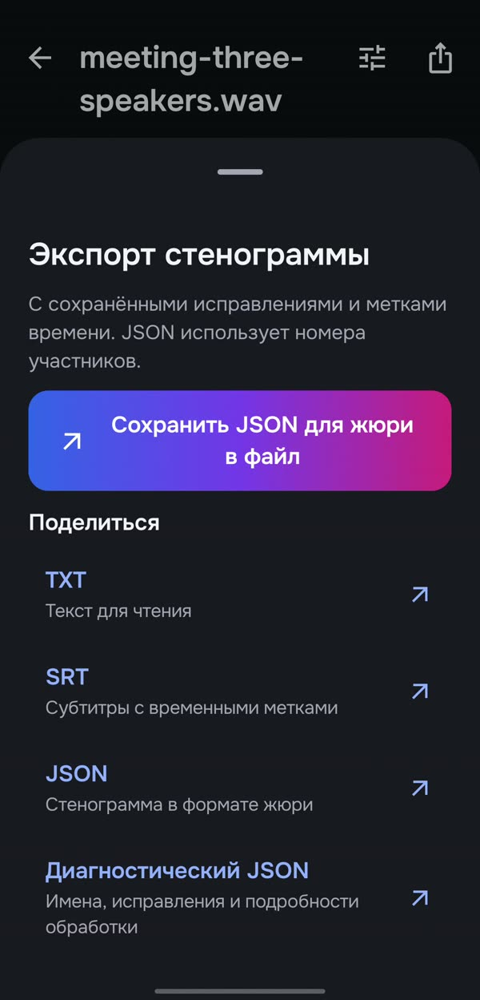

Всё на устройстве
Распознавание работает без интернета. Аудио, обработка и результат остаются на вашем телефоне.
REPLIKA — Android-приложение, которое полностью офлайн превращает запись разговора в стенограмму с разделением говорящих и таймкодами.
Android · APK на странице Releases
Распознавание работает без интернета. Аудио, обработка и результат остаются на вашем телефоне.
Разделение говорящих и таймкоды каждой реплики помогают ориентироваться в разговоре.
Плеер с переходом к нужной реплике позволяет сверить её с записью и внести правки в текст.
Экспортируйте стенограмму как обычный текст, субтитры или структурированные данные.
От записи до структурированной стенограммы.
Каждый этап выполняется на телефоне.
Запись разговора
Речевые участки
Кто говорит
Речь в текст
Текст, говорящие, время
Замеры на нашем dev-наборе из 8 записей и на телефоне vivo X300.
Корпус небольшой, ограничения описаны в LIMITATIONS.
| Метрика | Что измеряем | V1.6 | Сейчас |
|---|---|---|---|
| WER | Ошибки распознавания слов, с пунктуацией | 23,26% | 13,32% |
| DER | Ошибки разделения говорящих | 43,16% | 18,30% |
| Спикеры | Верно определено число говорящих | 2 из 8 | 7 из 8 |
| RTF | Время обработки / длительность, запись 1 / 10 мин | — | 0,36 / 0,74 |
ПРИВАТНОСТЬ
Аудио не покидает телефон. Поиск речи, разделение говорящих и распознавание выполняются локально — без передачи записи в облако.
Кадры записи экрана телефона vivo X300, версия 1.7. Распознавание и разделение говорящих выполняются на устройстве.




Команда кейса Nuclear IT Hack 2026: офлайн-стенограмма разговоров по говорящим на Android. Исходный код, APK и документация открыты.
Репозиторий проекта